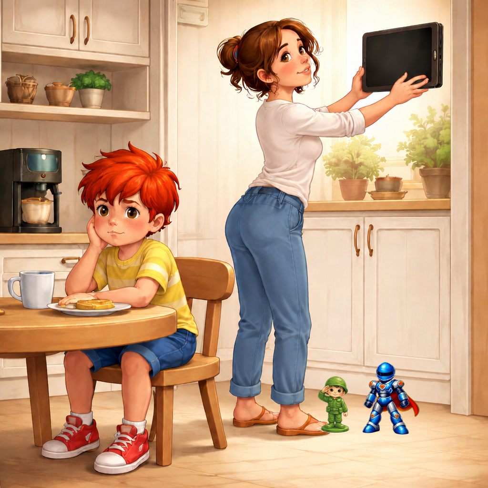
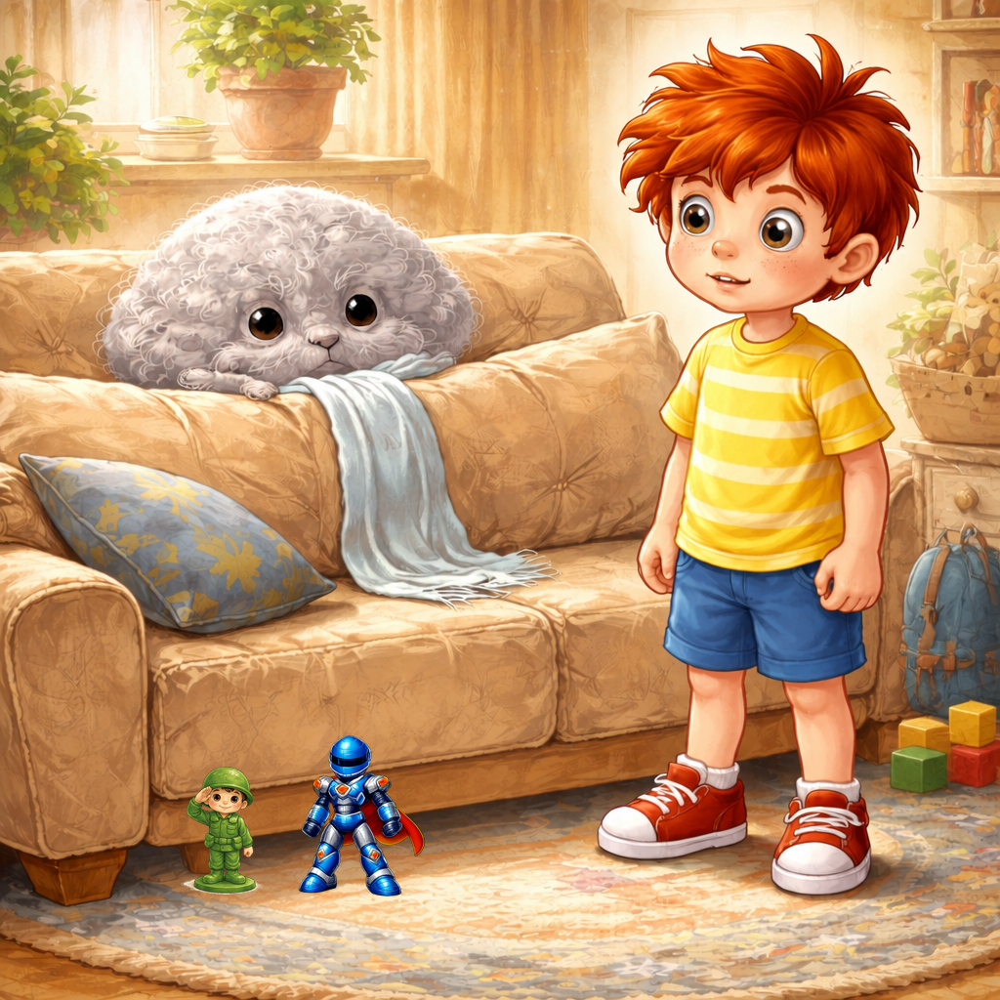
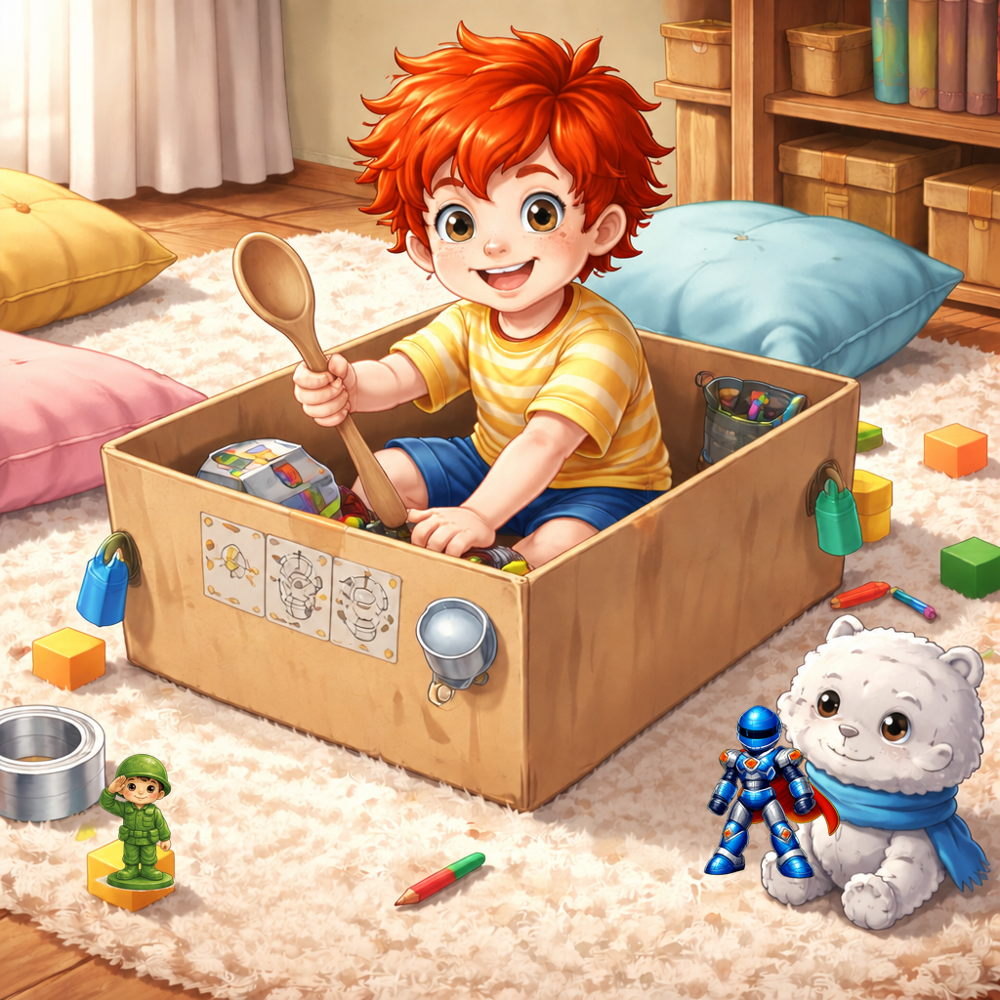
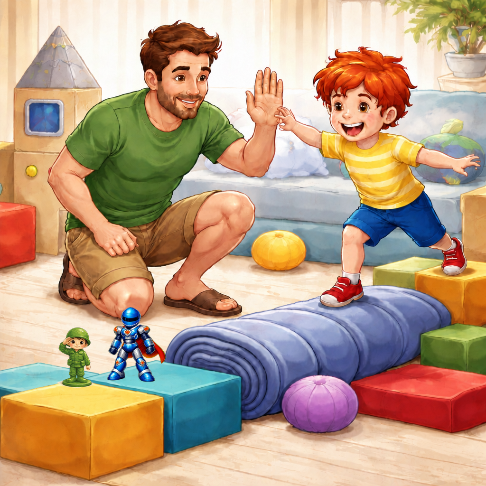
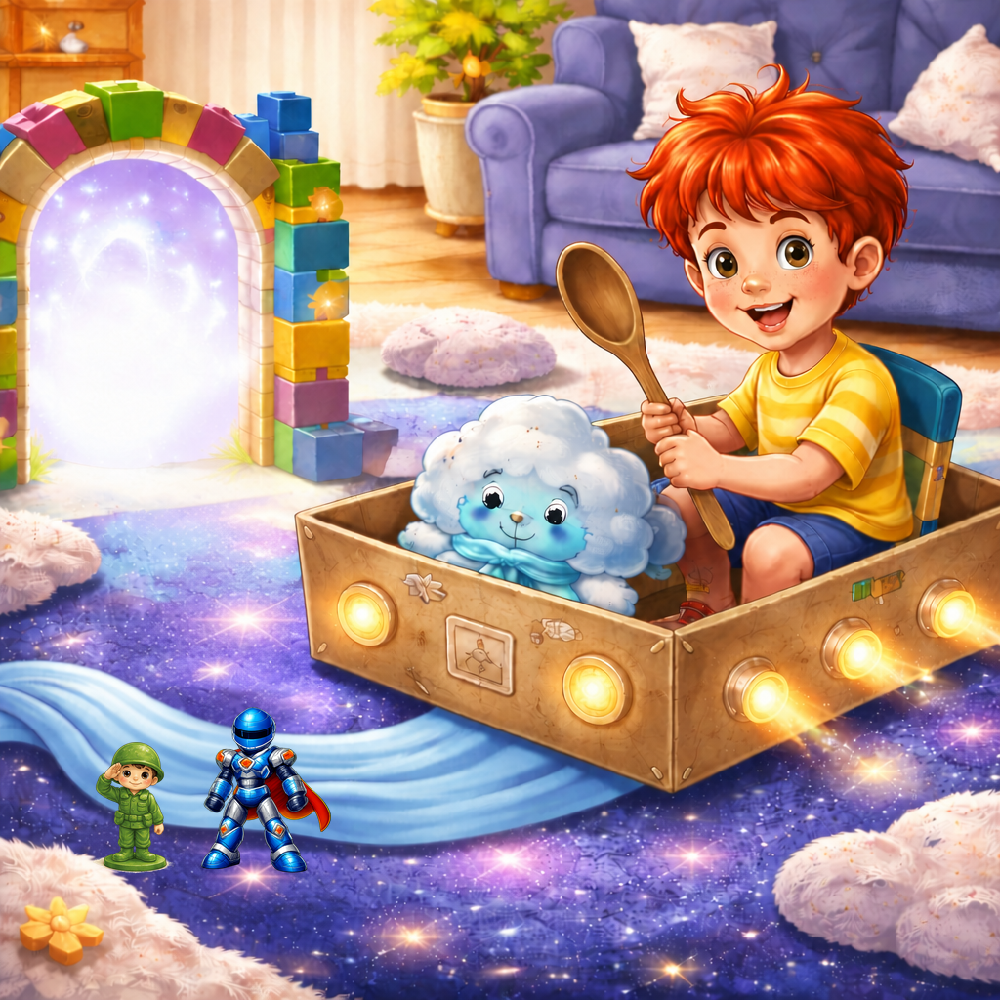
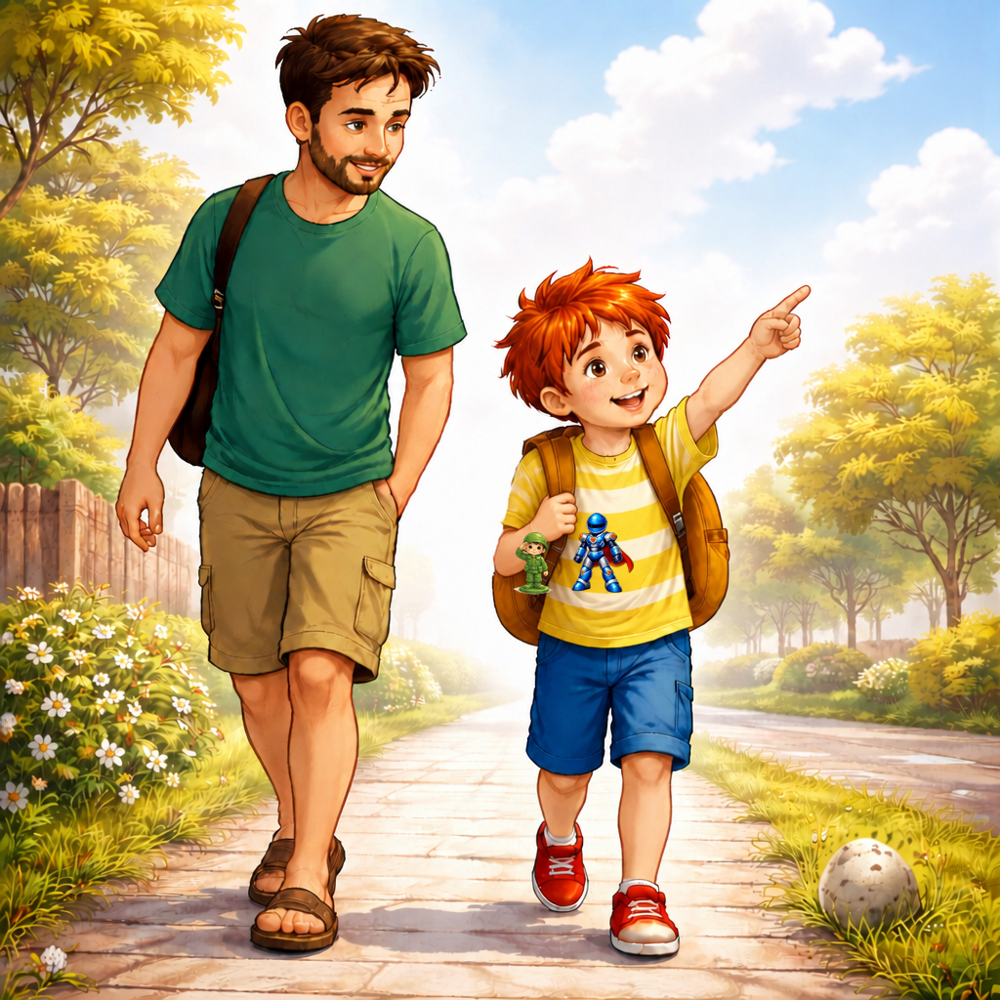
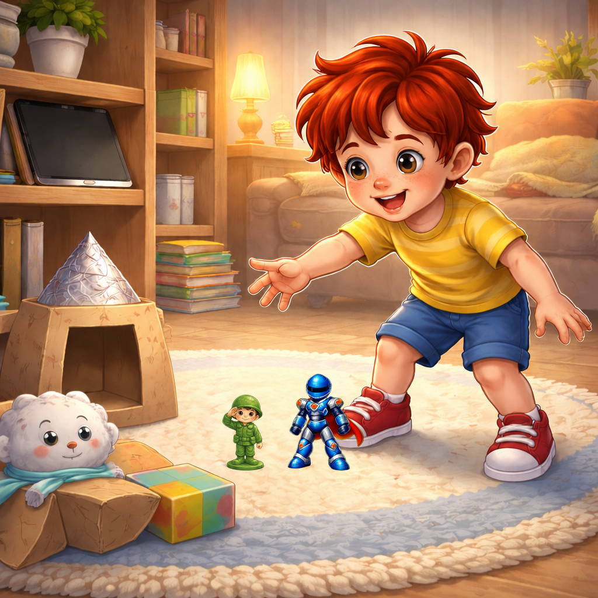
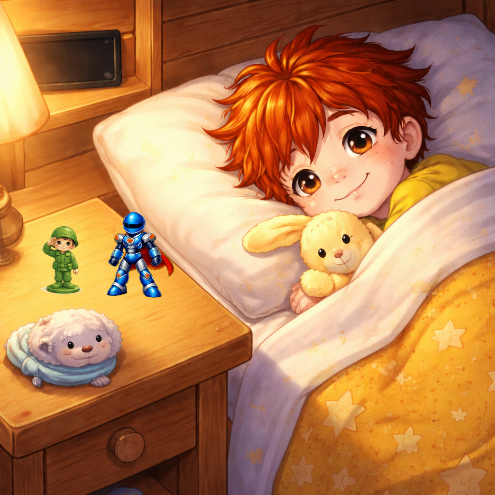

Палавко и денят без екран
Съботната сутрин започна толкова тихо, че дори часовникът в кухнята сякаш тиктакаше на пръсти.
Мама беше отворила прозореца и въздухът миришеше на препечени филийки, на чисто пране и на онова особено обещание, което имат почивните дни: че нещо хубаво може да започне всеки момент.
Само че Палавко не забелязваше нито въздуха, нито филийките, нито обещанието.
Той седеше на дивана с таблет в ръце. Червената му коса стърчеше на всички посоки, кафявите му очи не мигаха почти никак, а палецът му се движеше по екрана така бързо, сякаш гони малка невидима муха.
До него на килима стоеше Рико, зеленият пластмасов войник. Стоеше изправен, както винаги, с каска на главата и с търпението на играчка, която е чакала какви ли не велики мисии.
Малко по-нататък Блицко беше кацнал върху възглавница. Синьо-сребристият му костюм блестеше, оранжевата му пелерина беше изгладена с пръст, а тъмният му визьор гледаше към Палавко така, сякаш казваше: Е, кога започваме?
Но Палавко не започваше нищо.

От таблета се чуваше весела музичка, после писукане, после глас, който се смееше прекалено силно, после пак музичка.
- Палавко - каза мама от кухнята. - Закуската е готова.
- След малко - отвърна Палавко, без да вдигне очи.
- След малко вече мина веднъж - каза мама.
- Тогава след още едно малко.
Мама се появи на вратата с кърпа в ръка. Погледна го. Погледна таблета. После погледна Рико и Блицко, които стояха като двама поканени гости, на които никой не е отворил вратата.
- Хайде първо закуска, после игра - каза тя.
- Аз играя - каза Палавко.
- Това е игра на екрана.
- И какво от това? Тя е много важна. Ако спра сега, роботът ще падне в лавата.
Мама въздъхна.
- Роботът може да почака две филийки време.
Палавко се намръщи.
- Роботите не чакат. Особено когато има лава.
Рико не каза нищо, но ако пластмасовите войници можеха да въздишат, сигурно щеше да въздъхне съвсем мъничко.
Палавко отиде до масата с таблета в ръце. Седна. Филийката го чакаше в чинията. Чаят го чакаше в чашата. Мама го чакаше с онзи поглед, който не е сърдит, но вече е много близо до него.
- Остави таблета до чинията - каза тя.
- Само да мина това ниво.
- Палавко.
- Само това ниво след това ниво.
Мама протегна ръка и сложи таблета на шкафа.
Палавко застина.
В стаята настъпи тишина, но не хубава тишина. Тишина с настръхнали краища.
- Мамо! - извика той. - Сега всичко ще се развали!
- Закуската ще се развали, ако стои още малко - каза мама спокойно.
- Не е честно!
- Не е честно и филийката да чака повече от робота.

Палавко изяде закуската така, сякаш всяка хапка му беше лично обидена. Дъвчеше бавно, гледаше към шкафа и от време на време въздишаше толкова тежко, че чаят в чашата почти можеше да направи вълнички.
След закуската мама каза:
- Днес ще имаме ден без екран до вечерта.
Палавко премигна.
- Какво значи ден без екран?
- Значи таблетът, телефоните и телевизорът ще си почиват.
- Но те не са уморени!
- Може би не са. Но очите ти са. И главата ти. И игрите на килима също те чакат.
Палавко погледна към Рико и Блицко.
Те наистина го чакаха.
Това го ядоса още повече, защото когато някой те чака търпеливо, не можеш лесно да му се сърдиш.
- Няма какво да правя без екран - каза Палавко.
Точно тогава, съвсем тихо, нещо се размърда зад възглавниците на дивана.
Първо се показа едно сиво пухче. После второ. После цяла малка сива топчица, мека като прашинка и кръгла като прозявка. Имаше две сънени очи като копчета и дълъг шал, който изглеждаше направен от въздишки.
- Ааааах - прозя се топчицата. - Някой каза ли, че няма какво да прави?
Палавко подскочи.
- Кой си ти?
- Аз съм Скучко - каза сивото същество и се протегна. - Идвам винаги, когато някое дете реши, че без екран светът е празен.

- Светът не е празен - каза Палавко.
- Така ли? - попита Скучко и се огледа. - А защо тогава седиш като забравена чорапена топка?
Палавко отвори уста да отговори, но не намери нищо достатъчно сърдито.
Блицко скочи от възглавницата. Пелерината му трепна.
- Внимание! Имаме сиво нашествие.
Рико пристъпи напред. Ръцете му бяха празни, както винаги, но той изглеждаше готов за сериозна мисия.
- Може би Скучко не е враг - каза Рико. - Може би е знак.
- Аз съм много важен знак - потвърди Скучко. - Знак, че някой трябва да измисли нещо.
- Аз измислям неща на таблета - каза Палавко.
- Не - отвърна Скучко. - Таблетът ти ги подава готови. Ти само ги гониш с пръст.
Това прозвуча толкова вярно, че Палавко пак се намръщи.
- Не искам да измислям.
- Чудесно - каза Скучко и се настани по-удобно. - Тогава аз ще порасна.
И наистина порасна. Не много. Само колкото една възглавница. Но достатъчно, за да се разлее по дивана като сив облак.
- Ей! - каза Палавко. - Не ми заемай мястото.
- То и без това не ти трябва - отвърна Скучко. - Нали няма какво да правиш?
Палавко стисна устни.
Блицко се обърна към него.
- Командире, предлагам спасителна мисия. Да построим космически кораб от кашона до вратата.
- Кашонът е просто кашон - каза Палавко.
- Само докато някой не му повярва - рече Рико.
Палавко погледна кашона. Беше останал от новите обувки на татко. Имаше капак, две сгъвки и едно леко смачкано ъгълче.
Не приличаше на кораб.
Но ако се обърнеше настрани... ако се сложеше възглавница отпред... ако дървената лъжица станеше кормило...
- Може би - каза Палавко, но тихо, за да не прозвучи като съгласие.
Той дръпна кашона на килима. Блицко веднага застана на носа, тържествен и лъскав. Рико зае място до него, стабилен като малка зелена кула. Скучко ги наблюдаваше от дивана и леко се смали.

Палавко донесе две възглавници, една дървена лъжица, син шал и три кубчета. Синьото шалче стана река от звезден прах. Кубчетата станаха бутони. Лъжицата стана управление, макар че мама от кухнята извика:
- Само после да ми върнеш кормилото за супа!
- Това не е кормило за супа! - извика Палавко. - Това е космическо управление!
- Тогава го измий след галактиката - каза мама.
Палавко се засмя.
Беше първият му смях за деня.
Скучко се смали още малко.
Корабът излетя от килима без никакъв шум, защото въображаемите кораби могат да бъдат и тихи, когато под тях има съседи. Палавко седна зад кашона, Блицко гледаше напред с тъмния си визьор, а Рико пазеше задната част на кораба от падащи възглавници.
- Внимание! - обяви Палавко. - Приближаваме Планетата на Разпилените Чорапи!
- Там гравитацията е странна - каза Рико. - Всички чорапи се залепят под леглата.
- Аз ще ги спася със суперскорост - каза Блицко.
- А аз ще ги сортирам - добави Рико. - Защото спасен чорап без другарчето си е половин победа.
Палавко се засмя още по-силно.
После от коридора се чу гласът на татко:
- Какво става тук? Защо обувният ми кашон лети?
Татко се появи на вратата. Беше с домашна тениска, къси панталони, брада и пантофи. Носеше отвертка, защото уж щеше да поправя дръжката на шкафа, но лицето му вече казваше, че може би ще поправи първо една галактическа беда.
- Татко! - извика Палавко. - Имаме ден без екран.
- Охо - каза татко. - Това е опасно приключение.
- Много опасно - потвърди Палавко. - Скучко вече дойде.
Татко погледна към сивото пухче на дивана.
- Познавам го. И при възрастните идва понякога. Само че при нас се преструва на безкрайно гледане в телефона.
Скучко се направи, че не чува.
- Трябва ни мисия - каза татко. - Такава, в която корабът да мине през астероиден пояс, да спаси една изгубена планета и да се върне преди обяд.
- Астероиден пояс? - очите на Палавко светнаха.
Татко взе няколко възглавници, две меки топки и навито одеяло. Подреди ги по пода, без да събори лампата, което си беше почти геройство.
- Правило първо - каза той. - Не настъпваме възглавницата с цветята. Тя е горещ астероид.
- Правило второ - добави Палавко. - Ако докоснеш одеялото, попадаш в черна дупка и трябва да кажеш три смешни думи.
- Приемам - каза татко.
И играта започна.

Палавко прескачаше възглавниците, но внимателно. Блицко летеше от кубче на кубче, а Палавко много внимаваше да не го направи огромен герой, защото Блицко беше малък герой и така си беше правилно. Рико стоеше на едно синьо кубче и пазеше звездната врата с най-сериозното си приятелско лице.
Татко попадна в черната дупка още на третата крачка.
- Три смешни думи! - извика Палавко.
Татко се замисли.
- Кисела... пантофена... ракета.
Палавко се разсмя така, че почти падна върху горещия астероид.
Скучко, който до преди малко беше колкото възглавница, стана колкото топка. После колкото ябълка. После колкото едно много малко кълбо прах.
- Не е честно - измърмори той. - Когато децата започнат да измислят, аз нямам къде да седна.
- Може да седнеш в кораба - предложи Рико. - Но само ако не мрънкаш.
Скучко премигна.
- Аз съм създаден от мрънкане.
- Тогава опитай нещо ново - каза Блицко.
Палавко взе Скучко внимателно и го сложи в кашона.
- Ти ще бъдеш облакът, който показва накъде духа звездният вятър.
Скучко се изчерви леко, доколкото сивите същества могат да се изчервяват.

- Това звучи... важно.
- Много важно - каза Палавко. - Без теб ще се загубим.
След малко кашонът вече не беше просто кашон. Беше кораб, после подводница, после пещера, после магазин за невидими сладоледи. Дървената лъжица беше кормило, микрофон и телескоп. Синият шал беше река, небе и море.
А таблетът стоеше на шкафа и си почиваше.
Палавко понякога го поглеждаше. В началото погледите му бяха дълги и лепкави. После станаха по-къси. Накрая почти забрави да поглежда.
По обяд мама надникна от кухнята.
- Екипаж, супата е готова.
- Само да минем през последната мъглявина - каза Палавко.
Мама го погледна.
Палавко сам се чу.
После бавно остави лъжицата-кормило.
- Добре. Мъглявината може да почака супата.
Мама се усмихна.
- Това беше много зряло решение за космически капитан.
На масата Палавко яде супа. Не с космическото управление, а с обикновена лъжица, защото някои предмети имат по няколко живота, но е добре да се връщат навреме към основната си работа.
След обяд татко предложи разходка.
- Без телефон? - попита Палавко подозрително.
- Без гледане в телефон - каза татко. - Но с гледане в света.
Навън светът се оказа доста по-голям от екрана.
На тротоара имаше локва, в която небето се беше обърнало с главата надолу. В тревата имаше камъче, което приличаше на яйце на дракон. Една пейка скърцаше като стар кораб. А облаците се движеха толкова бавно, че можеше да ги обвиниш, че нарочно карат хората да измислят.
Палавко носеше Рико в джоба си, а Блицко в малката раница. Скучко беше станал съвсем мъничък и се беше настанил върху рамото му като сиво пухче.
- Виж! - каза Палавко. - Онзи облак е кит.
- На мен ми прилича на динозавър - каза татко.
- Динозавър-кит - реши Палавко. - Много рядък вид.
- С какво се храни?
Палавко се замисли.
- С лоши оправдания.

Татко се засмя.
Когато се прибраха, таблетът вече беше зареден. Стоеше на шкафа тих и лъскав. Палавко го видя веднага. Разбира се, че го видя. Децата могат да видят зареден таблет от разстояние, от което възрастните не виждат дори къде са си оставили очилата.
Мама каза:
- Вечерта може да имаш малко време на екрана. Ако искаш.
Палавко протегна ръка.
После спря.
На килима кашонът още беше кораб. Рико стоеше на звездната врата. Блицко беше до него, точно малко по-висок, с пелерина на място. Скучко надничаше от ръба на кашона, вече не сив от мрънкане, а сив като малко облаче, което чака вятър.
- Може ли първо да довършим мисията? - попита Палавко.
Мама го погледна така, сякаш току-що беше видяла как чорапите сами се прибират по двойки.
- Може.
Палавко седна на килима.
- Рико, провери двигателя.
- Двигателят е спокоен - каза Рико.
- Блицко, готов ли си за полет?
- Готов - каза Блицко. - Но този път летим всички заедно.
- Скучко?
Скучко се изпъчи.
- Аз ще следя за скучни дупки по маршрута.
Палавко се усмихна.
- Тогава излитаме.

Вечерта все пак имаше малко екран. Палавко гледа кратко филмче с мама и татко. После сам натисна копчето за край.
Не защото екранът беше лош.
Екранът можеше да бъде забавен. Можеше да показва песни, истории, роботи и смешни танцуващи неща. Но вече не беше единствената врата към приключенията.
Палавко имаше и друга врата.
Тя беше на килима, в кашона, под възглавниците, в джоба с Рико, в пелерината на Блицко и в малката смела мисъл, че когато нещо ти липсва, можеш да измислиш нещо ново.
Преди сън мама го зави.
- Как беше денят без екран? - попита тя.
Палавко се замисли.
- В началото беше ужасен.
- А после?
- После Скучко почти се превърна в навигатор.
- Това звучи сериозно.
- Много. Утре може пак да имаме малко без екран.
Мама вдигна вежди.
- Малко?
- Е, може и средно - каза Палавко. - Но не казвай на таблета. Да не се обиди.
Мама се засмя и го целуна по челото.
На нощното шкафче Рико стоеше спокойно. До него Блицко блестеше тихо в тъмното, без очите му да светят, защото беше играчка, а не лампа. А Скучко се беше свил в едно почти невидимо облаче.
- Лека нощ - прошепна Палавко.
- Лека нощ - сякаш отговориха играчките.
А таблетът спеше на шкафа.
И за първи път през целия ден никой не го будеше.

И така Палавко разбра, че екранът може да бъде хубав гост, но не бива да става господар на целия ден. Защото най-големите приключения понякога започват точно когато екранът угасне, а въображението светне.